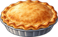
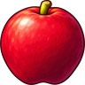
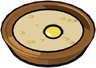
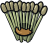

Milk
Obtaining
- Dropped by Cow (30% a kill)
- Dropped by Goat (30% a kill)
- Produced by a ranch Cow
- Produced by a ranch Goat
Used to make
| Item | Skill | Needs | Where |
|---|---|---|---|
 Pie ×1 | Cooking 15 | 1 ×  Apple, 1 × | Stove or Campfire |
 Barley Porridge ×1 | Cooking 15 | 2 × | Stove or Campfire |
| Cooking 35 | 3 × Cloudberries, 1 ×  Rye, 1 × | Stove or Campfire | |
| Cooking 30 | 2 × | Stove or Campfire | |
| Pretzel ×1 | Cooking 22 | 2 × Rye, 1 × | Stove or Campfire |
| Alchemy 5 | 1 × | Alchemy Lab |